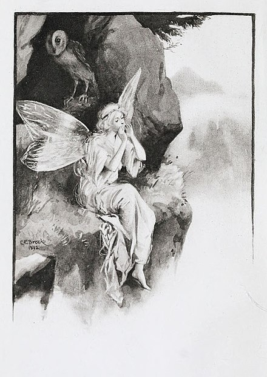

A fairy is a type of mythical being or legendary creature found in the folklore of multiple European cultures (including Celtic, Slavic, German, English, and French folklore), a form of spirit, often described as metaphysical, supernatural, or preternatural.
fairy sitting on ledge
The term fairy is sometimes used to describe any magical creature, including goblins and gnomes, while at other times, the term describes only a specific type of ethereal creature or sprite. Historical origins of fairies range from various traditions from Persian mythology to European folklore such as of Brythonic (Bretons, Welsh, Cornish), Gaelic (Irish, Scots, Manx), and Germanic peoples, and of Middle French medieval romances. According to some historians, such as Barthélemy d'Herbelot, fairies were adopted from and influenced by the peris of Persian mythology. Peris were angelic beings that were mentioned in antiquity in Pre-Islamic Persia as early as the Achaemenid Empire. Peris were later described in various Persian works in great detail such as the Shahnameh by Ferdowsi. A peri was illustrated to be fair, beautiful, and extravagant nature spirits that were supported by wings. This may have potentially influenced migratory Germanic and Eurasian settlers into Europe, or been transmitted during early exchanges. The similarities could also be attributed to a shared Proto-Indo-European mythology. In the Middle Ages, fairie was used adjectivally, meaning "enchanted" (as in fairie knight, fairie queene), but also became a generic term for various "enchanted" creatures during the Late Middle English period. Literature of the Elizabethan era conflated elves with the fairies of Romance culture, rendering these terms somewhat interchangeable. The modern concept of "fairy" in the narrower sense is unique to English folklore, later made diminutive in accordance with prevailing tastes of the Victorian era, as in "fairy tales" for children.
Fairies are generally described as human in appearance and having magical powers. Diminutive fairies of various kinds have been reported through centuries, ranging from quite tiny to the size of a human. These small sizes could be magically assumed, rather than constant. Some smaller fairies could expand their figures to imitate humans. On Orkney, fairies were described as short in stature, dressed in dark grey, and sometimes seen in armour. In some folklore, fairies have green eyes. Some depictions of fairies show them with footwear, others as barefoot. Wings, while common in Victorian and later artworks, are rare in folklore; fairies flew by means of magic, sometimes perched on ragwort stems or the backs of birds. Modern illustrations often include dragonfly or butterfly wings.
Early modern fairies does not derive from a single origin; the term is a conflation of disparate elements from folk belief sources, influenced by literature and speculation. In folklore of Ireland, the mythic aes sídhe, or 'people of the fairy hills', have come to a modern meaning somewhat inclusive of fairies. The Scandinavian elves also served as an influence. Folklorists and mythologists have variously depicted fairies as: the unworthy dead, the children of Eve, a kind of demon, a species independent of humans, an older race of humans, and fallen angels. The folkloristic or mythological elements combine Celtic, Germanic and Greco-Roman elements. Folklorists have suggested that 'fairies' arose from various earlier beliefs, which lost currency with the advent of Christianity. These disparate explanations are not necessarily incompatible, as 'fairies' may be traced to multiple sources.